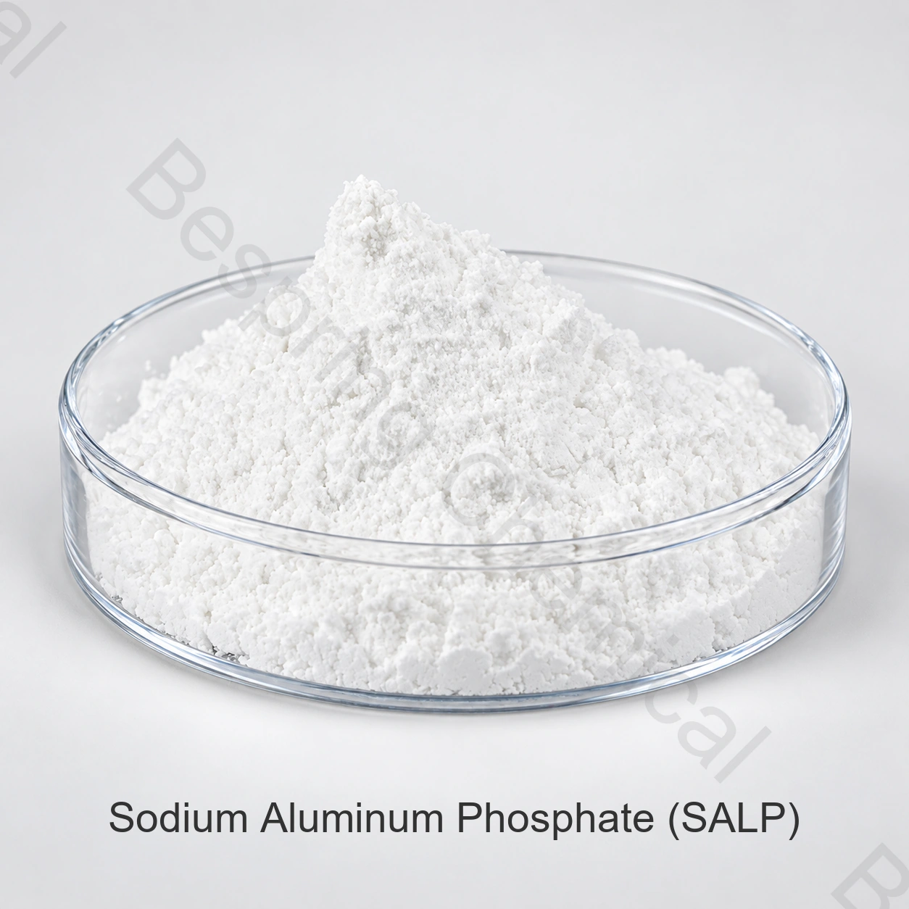

Контролируемая реакция
Поддерживает замедленное выброс углекислого газа по сравнению с быстродействующими разрыхтительными кислотами.
Кислота для разрышивания · INS 541(i) · SALP
Оцените скорость реакции SALP при рабочем времени выдержки и температуре выпечки. Сверьте идентификацию, спецификацию и условия применения.
Для рынка ЕАЭС проверьте категорию готового продукта и условия применения по действующей редакции ТР ТС 029/2012.
См. также: Оценка разрыхлителей в сухих смесях.

Иллюстрация продукта · марка и упаковка указываются в предложении
*Общий CAS не определяет разновидность SALP. Для формулы с коммерческим диапазоном потерь 15–16% согласуйте состав и метод испытания выбранной марки.
≥ 95,0% анализРеференсная спецификация закупок
Упаковка Уточняйте в коммерческом предложении
Минимальная партия Уточняйте в коммерческом предложении
Загрузка контейнера Уточняйте в коммерческом предложении
Обзор продукта
Кислый натрий-алюминиевый фосфат (SALP) — кислотный компонент химического разрыхления; скорость реакции зависит от марки и условий процесса. В системах выпечки он взаимодействует с бикарбонатом натрия, выделяя углекислый газ, что обеспечивает газообразование в тесте во время обработки и нагрева.
SALP идентифицируется как INS 541(i). Общий CAS 7785-88-8 сам по себе не определяет кислую или основную разновидность; для разрыхления требуется именно кислая марка. Коммерческий SALP может быть представлен несколькими химическими составами. Для формулы Na3Al2H15(PO4)8 указан коммерческий диапазон потерь при прокаливании 15–16%. Этот показатель сам по себе не доказывает состав партии. Покупатели должны подтвердить формулу, реакционные свойства, методы тестирования и требования целевого рынка перед заключением контракта.
*Запросите действующие сертификаты для подтверждения объёма, органа выдачи и действительности вашего заказа.
Значение рецептуры
SALP обеспечивает контролируемую кислотность для разрыхления на основе бикарбонатов. Фактическая эффективность зависит от нейтрализующей способности, характеристик частиц, полной формулы, смешивания, влажности, температуры и времени процесса.
Поддерживает замедленное выброс углекислого газа по сравнению с быстродействующими разрыхтительными кислотами.
Вносит кислоту для бикарбонатной реакции и расширения в валидированных тестах и тесте.
Помогает производителям контролировать структуру клеток и консистенцию готового продукта с помощью контролируемого разрыхтива.
Полезно там, где профиль разрыхтения должен поддерживать смешивание, удержание, формование или термическую обработку.
Типичные области применения
Пищевую категорию, дозировку и маркировку оценивают по требованиям рынков производства и сбыта.
SALP используется как кислый компонент в выбранных химических системах разрыхления для коммерческой выпечки и сухих премиксов.
В испытанной рецептуре реакционные свойства выбранной марки согласуют со временем выдержки, формованием и нагревом.
Технические характеристики продукции
Приведены коммерческие справочные показатели. Критерии приёмки определяют согласованная спецификация, методы испытаний и COA конкретной партии.
Прокрутите таблицу или используйте клавиатуру для просмотра всех столбцов
| Показатель | Спецификация | Единица / пояснение |
|---|---|---|
| SALP-анализ (Na3Al2H15(PO4)8) | ≥ 95.0% | Коммерческий показатель |
| Мышьяк (As) | ≤ 0.0005% | ≤ 5 мг/кг |
| Тяжёлые металлы (в пересчёте на Pb) | ≤ 0.001% | ≤ 10 мг/кг |
| Свинец (Pb) | ≤ 0.0002% | ≤ 2 мг/кг |
| pH (1% суспензии) | 2–3 | Кислотные |
| Потери при прокаливании | 15–16% | Согласуйте температуру и время испытания |
| Внешний вид | Белый порошок | Визуальная оценка |
Сравнение результатов: Коммерческий предел мышьяка 0.0005% (5 мг/кг) выше 3 мг/кг в JECFA для кислого SALP. Монография также устанавливает фторид не более 25 мг/кг; в таблице этот показатель отсутствует. Для заказа по JECFA нужны соответствующие пределы и результаты партии. Результаты могут отличаться из-за различий в условиях испытаний, оборудовании и методах. Перед заключением контракта подтвердите методы, правила отбора проб и критерии приема.
Упаковка и логистика
Укажите объём закупки, упаковку, место и желаемую дату доставки. Минимальную партию и условия поставки сверяйте с коммерческим предложением.
Хранение и срок хранения
Вопросы покупателя
Кислый SALP используют с бикарбонатом натрия в разрыхляющих системах для выпечки и жареных изделий. Скорость реакции зависит от марки, влажности, времени и нагрева. Точный уровень использования зависит от нейтрализующей способности, полного рецепта, процесса и местных правил.
Кислый фосфат алюминия-натрия идентифицируется по Кодексу INS номер 541(i). Названия, маркировка и разрешённые области применения могут различаться, поэтому покупателю следует проверить требования целевого рынка.
Нет. Таблица содержит коммерческие справочные пределы. Сертификат анализа содержит результаты конкретной партии; их сравнивают с договорными пределами и методами.
Укажите объём закупки, упаковку, место и желаемую дату доставки. Минимальную партию и условия поставки сверяйте с коммерческим предложением.
Укажите необходимые стандарты пищи, количество, упаковку, порт назначения, применение для выпечки или жареного теста, текущую систему разрыхления и цель доставки.
Проверьте спецификацию, паспорт безопасности и сертификат анализа соответствующей партии. Укажите, какие документы и какая область действия нужны. Проверьте действительность документов и их соответствие продукту и производственной площадке.
Обсудить поставку
Укажите пищевое применение, ключевые показатели, процесс, количество, упаковку, место назначения и условия поставки.
Если форма недоступна, перейдите на страницу контактов или напишите в отдел продаж.
Укажите марку и рынок назначения, чтобы уточнить доступность документов для вашего заказа.
Внешний источник не заменяет сертификат партии или спецификацию Bespring.
Потеря при прокаливании JECFA 15–16% относится к указанной форме, не являющейся тетрагидратом, при 750–800°C в течение 2 h. Согласуйте коммерческий метод, базис содержания, условия прокаливания и приготовление и температуру 1%-ной суспензии для pH. Этот диапазон pH — коммерческий параметр, а не идентификационный тест JECFA.
Технические источники: Спецификация JECFA · Спецификация JECFA · Перечень веществ FDA · American Society of Baking chemical leavening guide · 21 CFR 182.1781 · Цитируемый источник ЕС · Спецификация JECFA